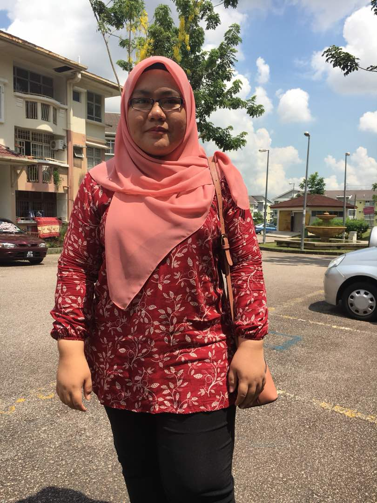

My name is Nurul Anis Binti Rafai, just call me Anis. I'm 19 years old. I were born at Hospital Segamat on 1 November 1999. I'm second children among the three sibling. I have a sister and a younger brother. My sister name is Nurul Aziera and my brother is Nabil Amily. I start my primary school at SK Bandar Seri Alam and secondary school at SMK Bandar Seri Alam.
When I was at form 4, I take technical course. Which is I study about Engineering Drawing and Engineering Technology. I feel lucky when I get that course because that one of my ambiton to be engineer. Unfortunately, after SPM's result is out I cannot continue with my ambition as I get Failed on Addmath bacause I have to get atleast Credit to I further my study to Unversity or Polytechnic on Engineering course. Yup, a little bit sad but what can I do as that is not my destiny.
|